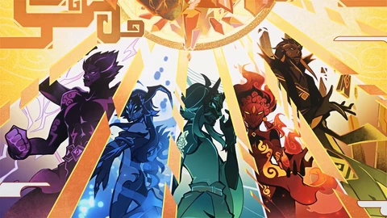

Liyue · Species & Creatures
Yaksha
Yakshas are adepti warriors Morax called to purge the lingering dangers of old wars. Their work accumulated karmic debt that broke the group apart; Xiao is the only yaksha still guarding Liyue in the present.

An Adepti Warrior Tradition
In Liyue’s records, yakshas are powerful adepti warriors called by Morax to cleanse the land of the harmful remnants of defeated gods and old wars. The term describes their role within Liyue’s adepti tradition; the story does not present them as a separate human nation or a single ordinary animal species.
One Sumeru Akademiya compilation names five as the strongest yakshas: Bosacius, Indarias, Bonanus, Menogias, and Alatus. Their names and the account’s heroic language come from Yakshas: The Guardian Adepti, a folklore document encountered in Xiao’s Story Quest. Other quests and character records provide additional perspective on the same group.
Karmic Debt and the Loss of the Five
Yakshas spent long lives fighting the resentment and miasma left by gods who died in the Archon War. The work brought them into contact with suffering and corruption, which accumulated as karmic debt and eventually damaged their minds and bodies. This is the cost the game associates with their duty, not an innate evil in the yakshas themselves.
The five did not all meet one simple fate: the accounts describe deaths, conflict, and disappearance. Xiao is the only yaksha still serving as a guardian in present-day Liyue. The Chasm story and Xiao’s own quest fill in parts of the group’s history, while leaving some individual details outside the record.
Xiao’s Place in the Story
Alatus is the name tied to Xiao before he took his current name. He remains burdened by the same karmic debt that afflicted the other yakshas and continues the work of purging lingering threats in Liyue. His preference for solitude reflects both the pain he carries and his concern that the corruption might harm people around him.
Perilous Trail lets the Traveler hear the remaining yaksha story through those who were there. Read alongside the folklore compilation, Xiao’s character stories, and the Chasm records, the material separates the group’s shared history from the parts each source can actually confirm.
This is an original CoreGG reading guide, not an official HoYoverse article or a reproduction of the game text. Source links below identify the records used so you can check the original context.
Sources & references
Check these sources for the original game text and reference trail.